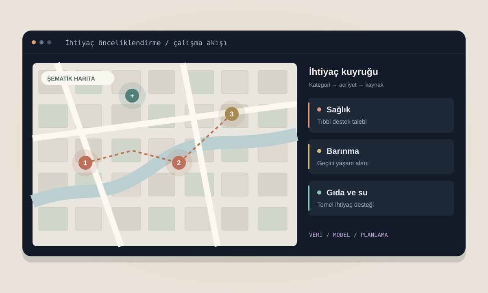

Illustrative project viewAI / MICROSERVICES
Post-disaster needs prioritization
A service architecture and machine learning model that assess needs by category and urgency.
Explore projectSoftware development & AI
I'm Hasan. I build software that makes sense of data and solves real problems.
SELECTED WORK
Different problems, a shared approach: understand the data, build the right system and evaluate the result.

Illustrative project viewAI / MICROSERVICES
A service architecture and machine learning model that assess needs by category and urgency.
Explore project GitHub README · command examples
GitHub README · command examplesSYSTEM DESIGN / BACKEND
A lightweight in-memory key–value store.
Explore project Illustrative moderation flow
Illustrative moderation flowNLP / DEEP LEARNING
Model training and evaluation for social media text classification.
Explore projectHow I work
I clarify the need, explore the data and define what the solution should achieve.
From data to prioritizationI choose an approach, train models and evaluate results. Each experiment informs the next decision.
My NLP projectI connect data and business logic in a clear software architecture, building testable and maintainable systems.
My system design projectON MY DESK
Notes from a project in progress.
A computer vision study to identify L3, L4 and L5 vertebrae and anatomical keypoints.
Explore the studyCONTACT